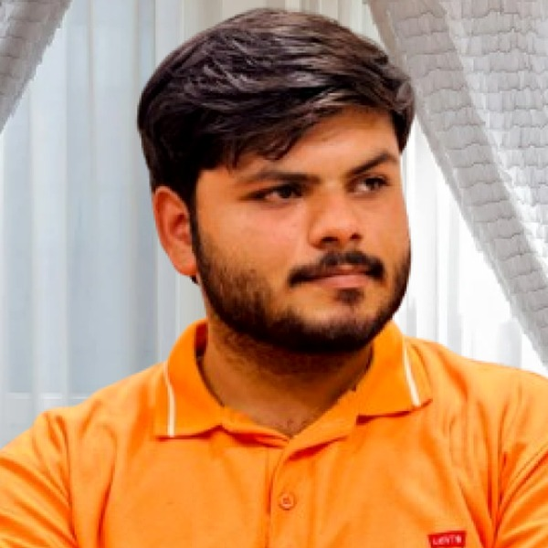

3.5+ years growing organic search for brands in the USA, UAE, Australia and Europe. Technical, semantic and entity SEO, plus AEO/GEO for visibility in Google and AI search.
Hire meDownload CV
Measured organic outcomes from sites I've owned SEO for.
Monthly organic visits before and after. Authority shown as Ahrefs Domain Rating (DR).
15+ agents built in Claude Code, connected to live SEO data. Every output gets human review.
Checks indexing, redirects, schema, sitemaps, robots.txt and llms.txt, and returns a prioritised fix list.
Researches search demand, competitors and entities, and produces an SEO-ready brief.
Verifies every claim in a draft against official sources before it is published.
Finds pages competing for the same keywords and recommends merge, redirect or re-target.
Maps hub-and-spoke clusters and suggests contextual internal links.
Watches for industry and policy changes and flags exactly which pages need updating.
Full-funnel SEO with automation built in.
From agency SEO to owning multi-site strategy and AI automation.
SEO for an Australian regulated-industry client, powered by a custom AI agent system.
Sole SEO strategist for 4 websites: 3x and 4.6x organic traffic growth.
Full-scope SEO for US and UAE clients.
SEO from scratch for clients in the US, Australia, Italy and UAE.
Open to remote SEO Strategist, Technical SEO and AI-SEO roles.
mnabilaslam77@gmail.com LinkedIn